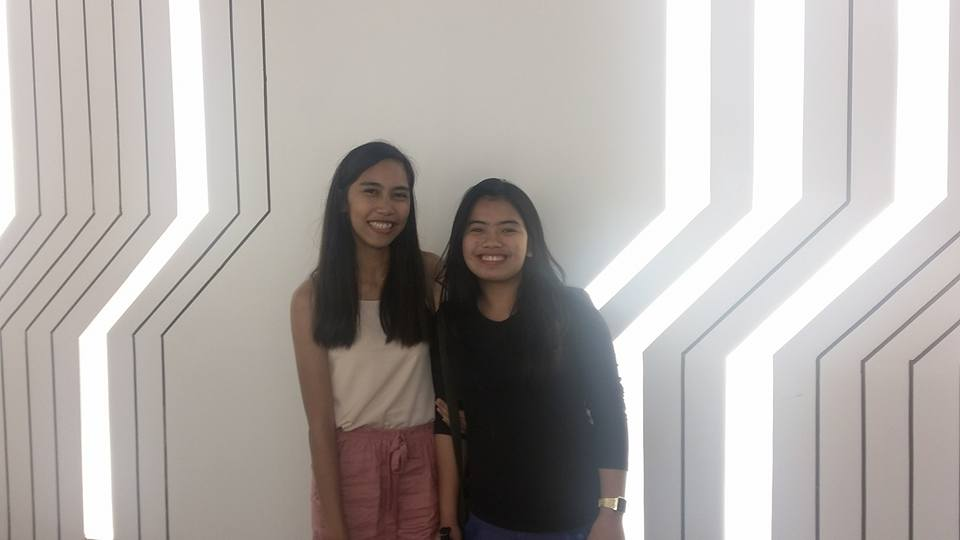

Paradoxical clothing has two owners. They are Vanessa and Angelika. They've been friends since 2015.
They met when they were in their first year in college, they were in the same course and section. They became friends
which eventually turned into best friends.
Vanessa was already into business since her third year in high school. She sells clothes and shoes back then. She also created an instragram account to start an online shop. She named it "Freak Chic" but eventually changed it to "Paradoxical Clothing" during her fourth year in high school. Unfortunately, she stopped doing business after graduating high school because of lack of customers since her primary customers are her classmates.
The actual business started when Vanessa and Angelika were in their first year in college. Vanessa was also being offered by some concept stores to become a branch partner but she can't commit because of lack of money. On the other hand, Angelika was also looking for something to invest her money in, so they've decided to become business partners. Angelika will provide the capital while Vanessa will run the business. They reactivated Vanessa's online shop as partners and accepted the offer to be a branch partner of one concept store.
Their first branch was in a shop called "The Fashion Boutique" located in Valenzuela in Metro Manila. Their second branch was in a shop called "Fortia Boutique" located in Paco, Manila. This shop eventually closed due to lack of customers. Their supposedly third branch was in a shop called "Sassy Beautique" located in Indang, Cavite.